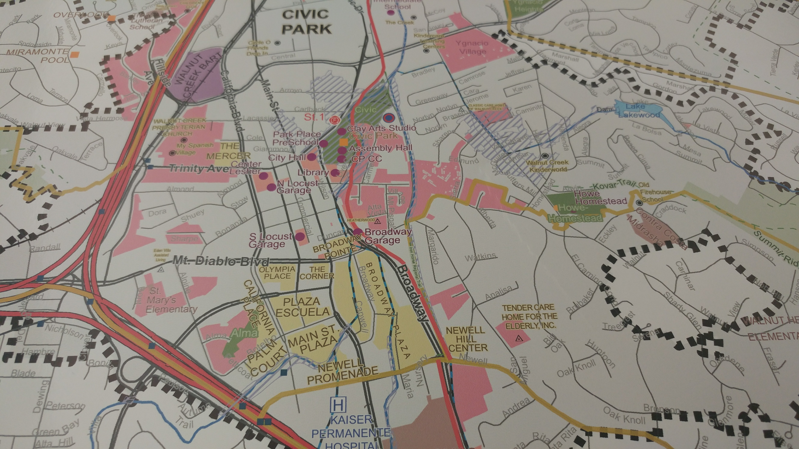
City of Walnut Creek: Facilities and Points of Interest
This map is HUGE! It's standard poster size and the largest single map I've done to date.
It was created for the new City Manager at Walnut Creek to help him get situated in the city.
It has just about everything in the city that he as leading decision maker would need to know.
It is framed and hanging up in his office on the third floor of City Hall.
Download Image
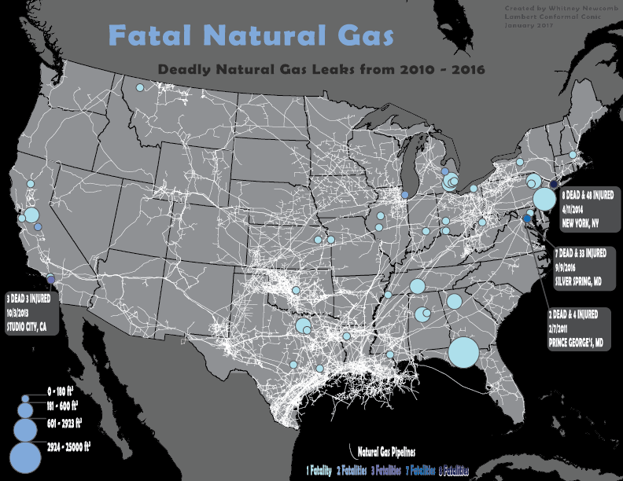
Fatal Natural Gas
This map shows the natural gas leaks that caused fatalities.
Incidents with the most fatalities are showcased with caption bubbles stating the number of fatalities, number of injured, date, and location.
The data of this map ranges from 2010 to 2016.
Natural gas pipelines smear across the nation.
Download Image
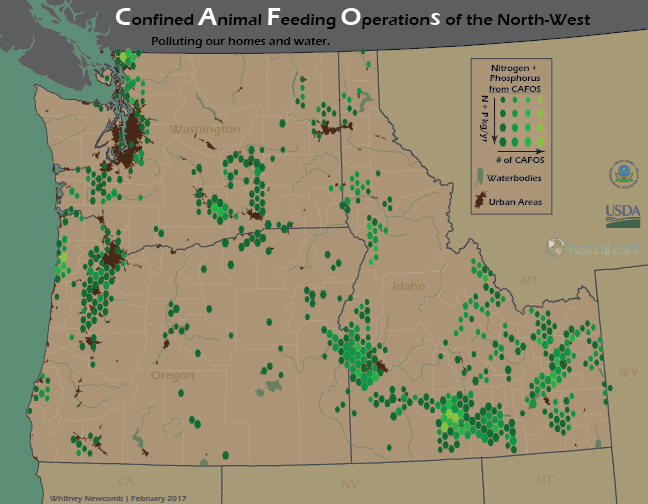
CAFOS of the NorthWest
Confined Animal Feeding Operations in the Northwestern states showing density of cafos and the amount of
Nitrogen and Phosphorus pollution in kilograms per year. The map also shows urban areas, rivers, and lakes.
Download Image
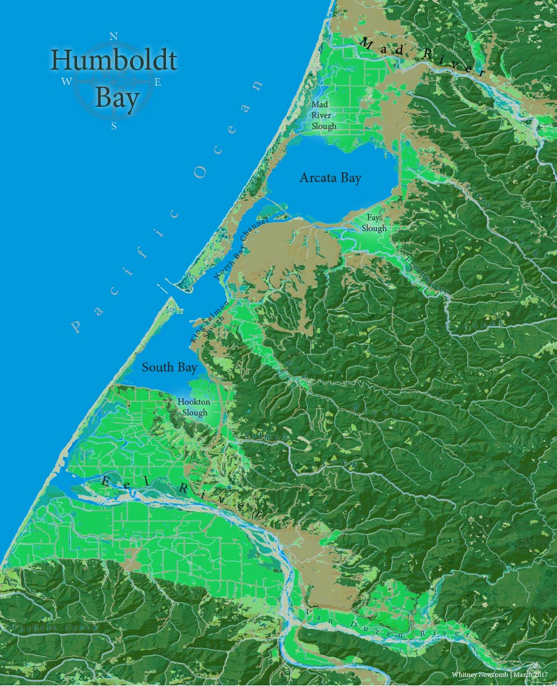
Humboldt Bay
Humboldt Bay is located in Northwestern California. Land Cover Map.
Download Image
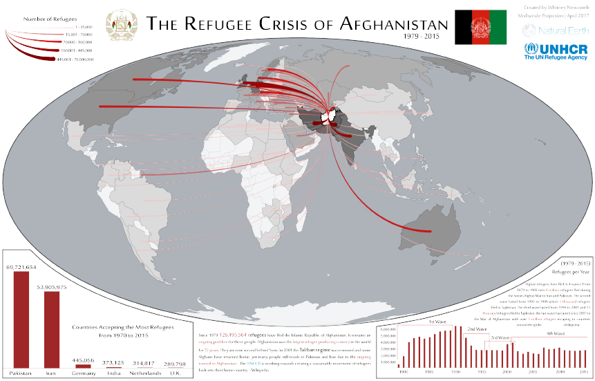
The Afghanistan Refugee Crisis
Afghanistan has had more refugees than any other country since the 1970's and they have traveled all
over the world for safety.
Download Image
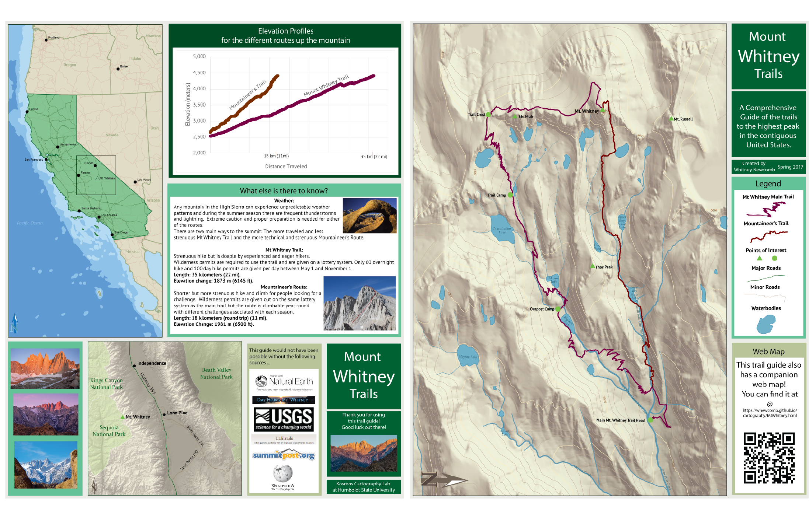
A Comprehensive Guide to the Routes up Mt. Whitney, CA
Mt. Whitney is the tallest mountain in the lower 48 and has two routes to the peak. This map was designed to be folded up and taken along. It also has a companion web map! See below! Part of my Advanced Cartography Final Project, 2017.
Download Image
Web Maps
Public Art in Walnut Creek
This ArcGIS Online Web Mapping Application was created using Esri's Web AppBuilder Developer's Edition. A huge thanks to Bedford Gallery and Walnut CreekDowntown for all of their help and support along the way.
Click HERE to visit this stand alone website.
Mt. Whitney Trails and Information
Companion Web map for my Mt. Whitney Trails Guide Handout. Please click on the trails or the markers for fun stuff!
Balmey Alley Murals Map
The Many Beautiful Murals of Balmey Alley - Mission District, San Fransisco California
This interactive map may not display in Internet Explorer.
Eel River and Salmon Website
This website was created for my Advanced GIS Course and contains 2 web maps. Please feel free to follow this link and explore this website.
Click HERE to visit this stand alone website.
Maps finished in ESRI's ArcMap
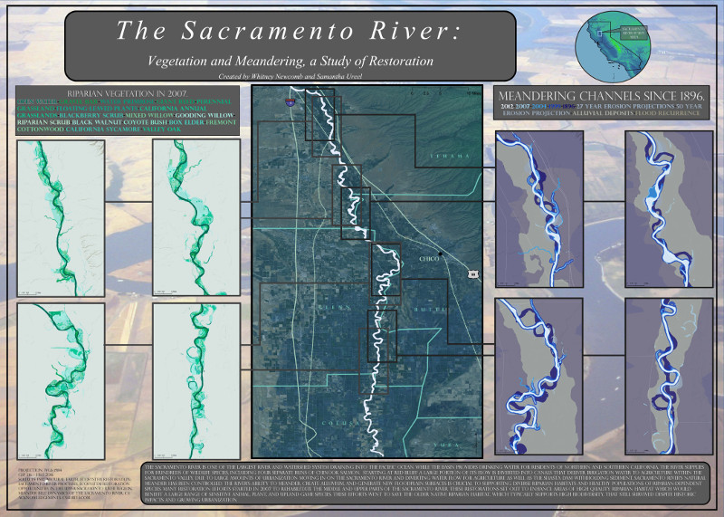
Sacramento Meander
River meander and Vegetation Study of the Sacramento River. Cartographic Poster created for Cartography Course Final Project with Samantha Ureel.
Download Image
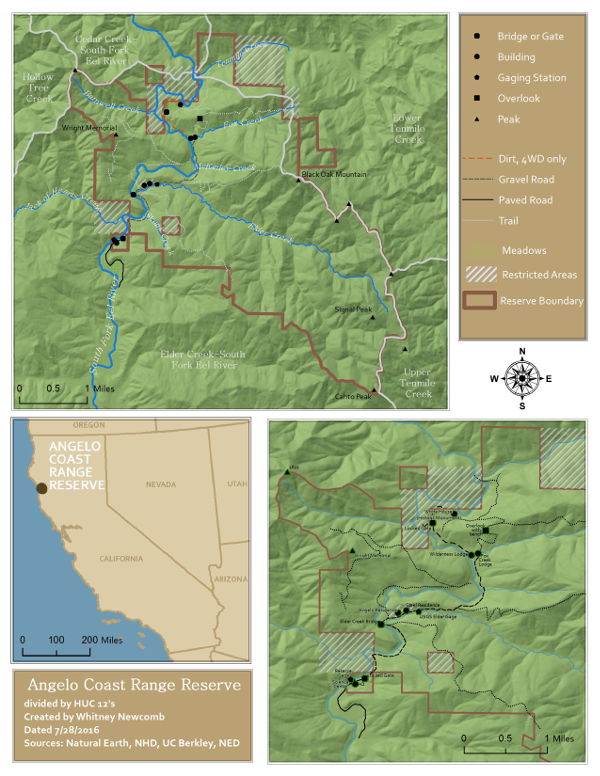
Angelo Coast Range Reserve
This map was created for my GIS Data Manager Internship.
Download Image
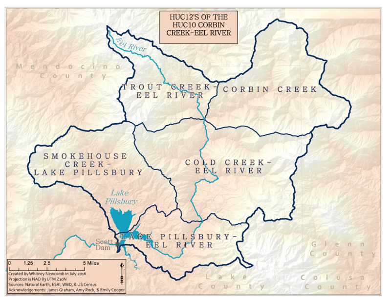
HUCS of Portion of the Eel River
Names of the Hydrologic Units surrounding Lake Pillsbury and the Eel River. This map was created for my GIS Data Manager Internship.
Download Image
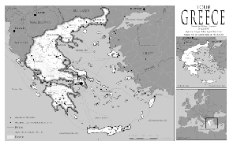
Tour Greece
Greece is an island country located in the Mediterranean Sea. This map was done for my Cartography course.
Download Image
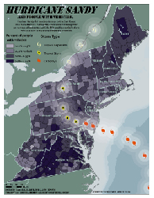
Hurricane Sandy
Hurricane Sandy wrecked the east coast. This map shows the path of the 'cane and the percentage of people who had vehicles per county. This map was done for my cartography course.
Download Image
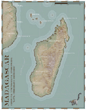
Madagascar
Madagascar is an island located off the south eastern shore of Africa and has some interesting topography. This map was done for my cartography course.
Download Image
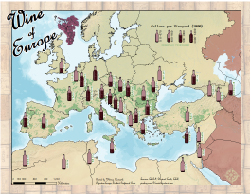
Wine of Europe
How much wine does each European country produce? This map tells that story and was done in my cartography course.
Download Image

{kind=link}
{kind=link}
{kind=link}
{kind=link}
{kind=link}
{kind=link}
{kind=link}
{kind=link}
{kind=link}
{kind=link}
{kind=link}
{kind=link}
{kind=link}
{kind=link}